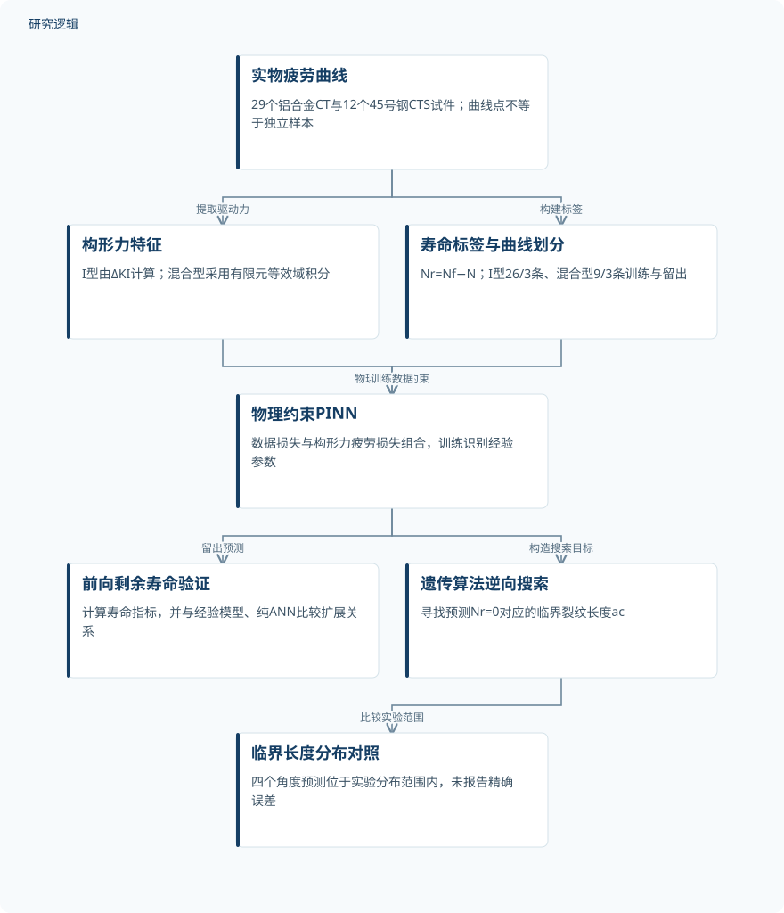
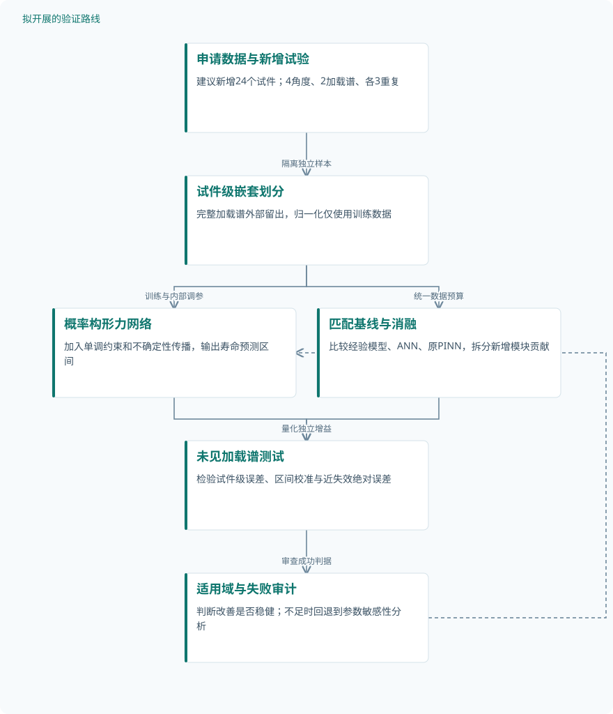

论文精读
基于构形力疲劳模型的正向与逆向机器学习：剩余寿命及临界裂纹长度预测
Prediction of residual life and critical crack length using the forward/inverse machine learning based on the configurational force fatigue model
精读更新 2026-10-03 22:03 · 依据论文全文整理
疲劳裂纹一旦偏转，剩余寿命便不再只是裂纹长度的函数，裂尖驱动力和材料响应同样重要。Dong、Liu与Li将构形力疲劳模型嵌入神经网络，正向预测剩余寿命，再通过遗传算法寻找零剩余寿命对应的临界裂纹长度。本文的阅读价值在于理解物理约束如何连接寿命预测与失效反演，同时辨清实物试件验证、物理一致性证据和工程泛化之间的距离。
文章目录
从裂纹偏转出发，重新组织寿命预测
研究针对延性金属中的I型及I–II混合型疲劳裂纹。复杂裂尖应力和循环加载历史会引起偏转与非自相似扩展，使仅依赖裂纹长度的寿命映射难以充分描述损伤演化。
原文指出，S–N曲线忽略预存裂纹，Paris定律在小尺度裂纹、早期扩展及多裂纹相互作用中存在限制。这些是研究背景，并非本文完成的基线对照；其切入点是用构形力表达裂尖驱动力，再以机器学习容纳实验离散性。
构形力约束前向网络，零寿命驱动逆向搜索
构形力张量为Cij=Wδij−σikuk,j，裂尖闭合路径积分得到C1与C2，其中C1等价于经典J积分。混合型裂纹由两者合力驱动偏转，等效幅值为ΔCeq=√(ΔC1²+ΔC2²)，疲劳关系为da/dN=λ(ΔCeq)^ξ；经验参数λ、ξ在训练中迭代识别。
前向映射写为Nr=fPINN(a,C1,C2)，混合型预测还以a与ΔCeq描述输入。混合损失L=Ldata+pLa同时约束寿命拟合与疲劳关系，推导采用a0≪ac及修正因子Y≈1；这属于经验物理关系约束，而非通常的偏微分方程残差。
I型网络含30、25、20、10、5个神经元的五个隐藏层，使用Sigmoid、线性输出和Adam，训练300 epochs，学习率0.005、batch size 16、p=0.7。逆向阶段以a为搜索变量，由遗传算法寻找预测Nr=0的ac；搜索中C1、C2如何随a更新未交代，影响物理一致性核验。
原研究：实物曲线到寿命预测与临界长度


实物实验提供寿命标签，构形力提供物理特征与训练约束；逆向结果的验证形式是与实验分布范围比较。
下载 SVG图示关系说明
实线表示相邻阶段的信息流，虚线表示跨阶段联系或反馈。
实物疲劳曲线 → 构形力特征：提取驱动力；实物疲劳曲线 → 寿命标签与曲线划分：构建标签；构形力特征 → 物理约束PINN：物理输入与约束；寿命标签与曲线划分 → 物理约束PINN：训练数据；物理约束PINN → 前向剩余寿命验证：留出预测；物理约束PINN → 遗传算法逆向搜索：构造搜索目标；遗传算法逆向搜索 → 临界长度分布对照：比较实验范围
41个实物试件提供证据，曲线点不等于独立样本
I型数据来自文献中的29个2024-T351铝合金CT试件，在相同恒幅载荷下重复试验，每条曲线约200点。26条曲线训练、3条留出，训练集采用网格搜索与8折交叉验证，但内部折是否保持整条曲线独立未说明。
混合型数据来自作者既往的12个45号钢CTS试件，0°、30°、45°、60°各3个，每条曲线约20–40点。9条训练，留出的3条分别来自30°、45°、60°；构形力由有限元等效域积分计算，因此这是实物数据与数值特征结合的验证，仿真和增强数量未报告。
两类预测均比较经验构形力模型与纯ANN，并检查da/dN–ΔCeq关系，但没有基线定量误差或架构匹配消融。另有数据量及超参数敏感性分析，其中“全部数据用于训练”不能抹去前述留出验证；结论概述虽写角度范围0°–90°，明确的重复试验分组不含90°。
| 验证任务 | 样本与规模 | 主要结果 |
|---|---|---|
| 2024-T351铝合金I型剩余寿命预测 | 29个独立试件、29条曲线，每条约200点；总点数、仿真及增强数量未报告，离散点不是新增试件。 | 训练R²=0.8787、RMSE=5785 cycles、CC=0.9441；测试为0.8847、5565 cycles、0.9469。全部预测在2.5倍散布带内，留出试件相对误差集中于20%–40%。 |
| 45号钢混合型剩余寿命及扩展关系验证 | 12个独立试件，4个角度各3次试验，每条约20–40点；总点数、仿真及增强数量未报告。 | 训练R²=0.9654、RMSE=3172 cycles、CC=0.9860；测试为0.9623、3075 cycles、0.9838。多数预测在2倍散布带内，多数留出相对误差低于20%。 |
| PINN与遗传算法反演临界裂纹长度 | 逆向评估独立试件数、各组重复数及遗传算法运行次数未报告，不能直接套用前向的12个试件。 | 图示各角度预测ac均处于实验分布范围内；精确长度、分布端点、误差和运行时间未报告。 |
| 数据量与训练超参数敏感性分析 | I型分析2000–5800点；混合型分析137、248、357点。对应29及12条曲线，点数不得当作独立样本数。 | 作者报告数据量增加时R²总体提高；最终batch size=16、学习率5×10⁻³、p=0.7，称p超过0.7后变化不显著。 |
展开数据来源、分组、对照与验证边界
2024-T351铝合金I型剩余寿命预测
数据来源。文献实物疲劳数据；CT试件宽50.0 mm、厚12.0 mm，按ASTM E647-93测试，Nr=Nf−N。
分组与工况。相同正弦恒幅载荷：最大4.5 kN、最小0.9 kN、15 Hz；正式加载从裂纹长度18 mm开始。
数据划分。26条曲线训练、3条留出；训练集8折交叉验证。内部折是否按试件隔离及随机种子未报告。
对照与消融。经验构形力模型及纯ANN；ANN为6层、每层100神经元。未报告架构匹配的独立消融。
评价指标。R²、RMSE、CC、相对误差及寿命散布带；RMSE结果单位cycles，CC原式不同于常见Pearson定义。
验证边界。只有同材料、同载荷验证；基线定量误差未报告。测试精度参与p选择，内部交叉验证独立性不明。
45号钢混合型剩余寿命及扩展关系验证
数据来源。作者既往实物实验；CTS试件100 mm×42 mm×6 mm，构形力由有限元等效域积分计算。
分组与工况。0°、30°、45°、60°，室温、20 Hz正弦恒幅载荷；失效定义为刚度下降20%，载荷幅值未报告。
数据划分。9条曲线训练、3条留出，后者分别为30°、45°、60°；被称为验证集和测试集，未报告另设调参集。
对照与消融。经验构形力模型及纯ANN；ANN为5层、每层120神经元。比较扩展关系，未报告架构匹配消融。
评价指标。R²、RMSE、CC及相对误差；另检查da/dN–ΔCeq，单位分别为mm/cycle与MPa·mm。
验证边界。基线优势仅有定性证据；缺少跨载荷验证、有限元网格收敛及重复划分统计，不能证明外部泛化。
PINN与遗传算法反演临界裂纹长度
数据来源。预测与Liu、Hou、Li的2020年构形力混合型疲劳研究所给实验分布范围比较。
分组与工况。比较0°、30°、45°、60°下的临界裂纹长度；各角度的实验分布统计定义未报告。
数据划分。使用已训练前向PINN搜索；逆向评估与前向训练样本的对应关系及独立划分未报告。
对照与消融。参照实验分布范围；未报告其他逆向算法对照、物理约束消融或确定性求根比较。
评价指标。以Nr=0为反演条件，输出ac，单位mm；误差指标、零寿命容差及完整适应度定义未报告。
验证边界。搜索边界、种群及终止参数缺失；范围吻合不等于精度或全局最优保证，也不能量化反演不确定性。
数据量与训练超参数敏感性分析
数据来源。两类裂纹曲线的子集和控制变量调参；数据量分析称全部收集数据用于训练，评估集未明确。
分组与工况。I型每次增加2条曲线，混合型每角度增加1条；另比较batch size 16/32/64/128、学习率及p。
数据划分。数据量分析未报告独立评估划分；各超参数设置的调参集、随机种子和重复训练次数未报告。
对照与消融。不同数据量和单项超参数设置互比；p从0.1至1.0分析，未包含p=0的无物理损失消融。
评价指标。采用R²和收敛epoch数；各设置精确R²、收敛判据、误差条及统计检验方法未报告。
验证边界。未区分新增独立曲线与更密集采样的贡献；batch size 16非图示最优端点，显著性结论缺少检验细节。
混合型预测较好，反演证据仍以分布吻合为主
I型测试集R²=0.8847、RMSE=5565 cycles、CC=0.9469，三个留出试件相对误差集中在20%–40%。混合型测试集对应为0.9623、3075 cycles、0.9838，多数相对误差低于20%；两类寿命尺度不同，不能仅凭RMSE大小判断优劣。
临界长度反演的证据弱于前向寿命预测。0°、30°、45°、60°的预测ac均落在所示实验分布范围内，但精确数值、误差和重复搜索统计未报告，分布带也不能解释为置信区间。特征重要性显示混合型中C2贡献突出，但相关性不能独立证明因果机制。
本文尚未建立跨材料、变幅载荷或III型裂纹的泛化证据，训练与测试指标接近也不足以排除过拟合。全库归一化后划分、依据测试精度选择p及验证/测试称谓混用削弱评估独立性；公式(5)、(6)原位置缺失虽有后续关系补充，CC定义异于常见Pearson公式、零寿命相对误差处理缺失，以及图16增长率拟合的图文符号冲突，仍限制复现和解释。
从这篇论文走向下一项研究
以下为结合研究方向提出的候选方案，实验设计与预期目标有待验证。
试件级外部验证与概率剩余寿命预测
问题与短板。当前证据限于恒幅载荷，且调参与测试边界不清。优先检验未见试件和未见加载条件，避免将曲线内插精度误作工程泛化能力。
改进机制。建议在构形力约束之外加入寿命单调性，并用参数分布或模型集成传播材料离散性，分别输出剩余寿命估计及预测区间。
候选创新。已有多过载概率PgNN摘要表明可结合裂纹闭合与不确定性；候选组合是将这些思想引入混合型构形力框架，不能预先宣称新颖性或有效性。
数据与实验设计。建议新增24个实物试件：4角度×2加载谱×3重复，设备由合作条件确定；原数据需向作者申请，新增数据需采集，仿真轨迹另计。按试件划分并留出完整加载谱。
对照与消融。采用嵌套试件级验证，归一化只拟合训练集；比较经验模型、架构匹配ANN和原PINN，分别消融物理损失、单调性及不确定性模块。
成功判据。预先规定在外部加载谱上同时改善寿命误差与区间校准，并保持物理一致性；报告试件级置信区间及近失效绝对误差，不以单次R²判成功。
风险与替代方案。小样本可能无法稳定估计尾部风险，变幅载荷还可能破坏现有经验关系。若采集不足，先做留一试件验证与参数敏感性分析，明确不替代外部验证。
临界长度反演的可识别性与失效边界审计
问题与短板。零寿命解目前仅与实验分布范围比较，尚不清楚是否唯一或稳定。需要检验搜索是否落入网络外推区，以及不同失效定义是否给出一致边界。
改进机制。建议先建立a变化时C1、C2同步更新的物理可行路径，再在限定域内求零寿命边界；结合前向模型不确定性，输出临界长度区间而非孤立最优值。
候选创新。遗传算法反演已是原文技术；候选改进是将驱动力一致性、解的可识别性和独立失效观测联结，贡献应由对照证明，而非算法名称的新组合。
数据与实验设计。建议另采12个独立CTS试件，4角度各3个，保留刚度、裂纹路径及循环数；原始数据须申请获取。有限元扫描单列为仿真，不把网格点或搜索次数充作实物样本。
对照与消融。在相同搜索边界和计算预算下比较遗传算法、网格扫描及适用时的括区间求根；消融驱动力更新和不确定性传播，重复搜索检验随机稳定性。
成功判据。以独立试件的20%刚度下降对应长度检验误差和区间覆盖，同时报告解的数量、物理可行性、零寿命残差及耗时；达到零残差不自动算验证成功。
风险与替代方案。网络可能无零点、多零点或在失效附近失真，刚度阈值也不等同所有断裂判据。若反演不稳定，退回显式扩展积分与实测阈值，并保留边界不确定性。
后续建议：从曲线拟合走向外部概率验证


对应第一条路线，所有节点均为建议设计；目标是检验跨加载谱泛化和寿命区间校准，而非展示已实现改善。
下载 SVG图示关系说明
实线表示相邻阶段的信息流，虚线表示跨阶段联系或反馈。
申请数据与新增试验 → 试件级嵌套划分：隔离独立样本；试件级嵌套划分 → 概率构形力网络：训练与内部调参；试件级嵌套划分 → 匹配基线与消融：统一数据预算；概率构形力网络 → 未见加载谱测试：冻结模型评估；匹配基线与消融 → 未见加载谱测试：量化独立增益；未见加载谱测试 → 适用域与失败审计：审查成功判据；适用域与失败审计 → 概率构形力网络：修订适用机制